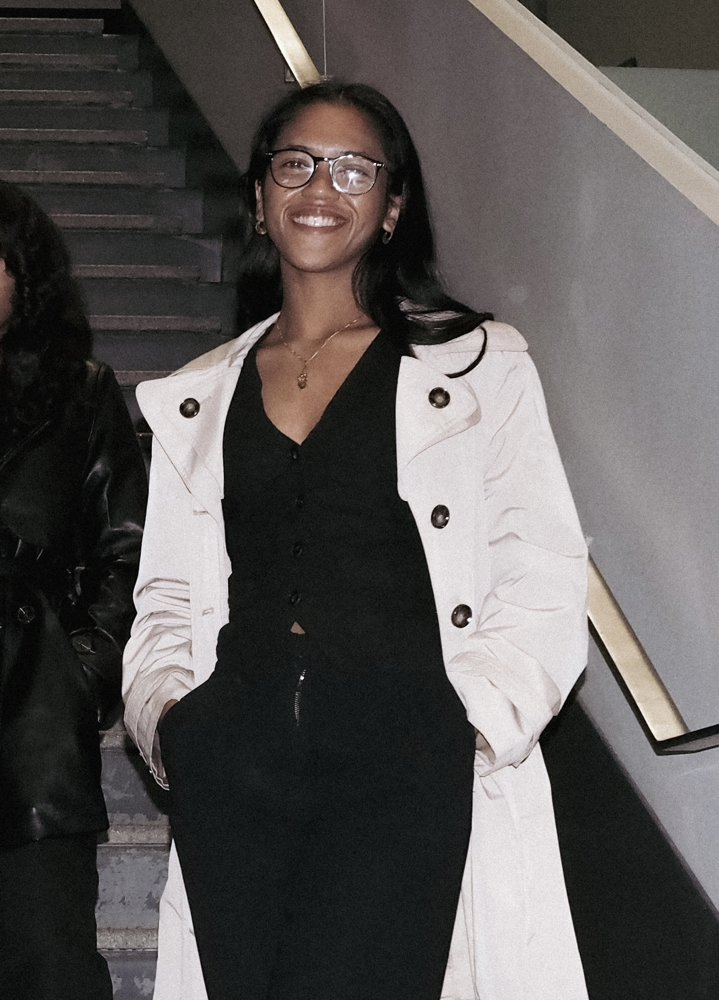
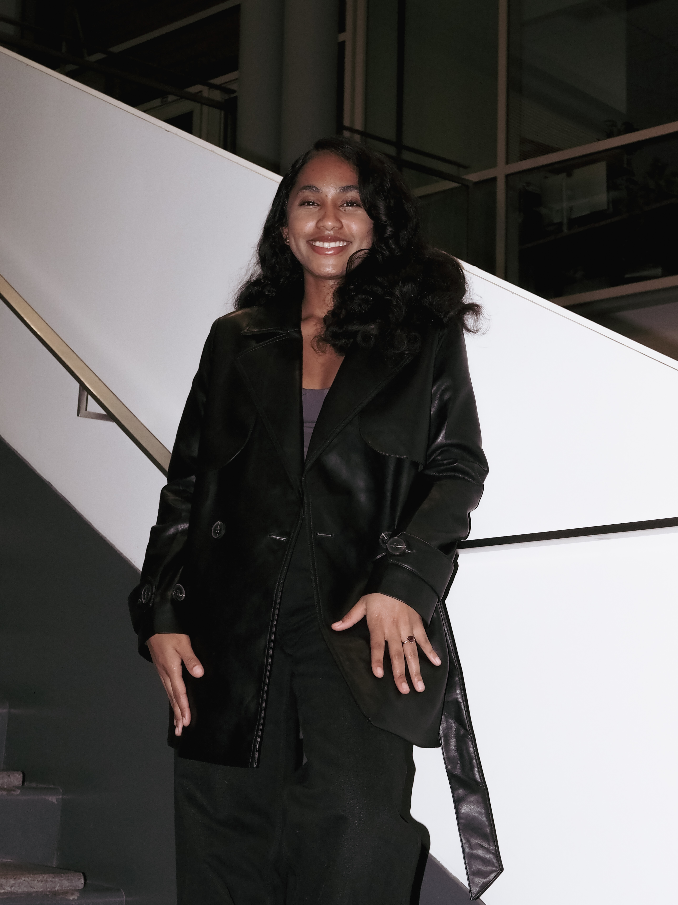
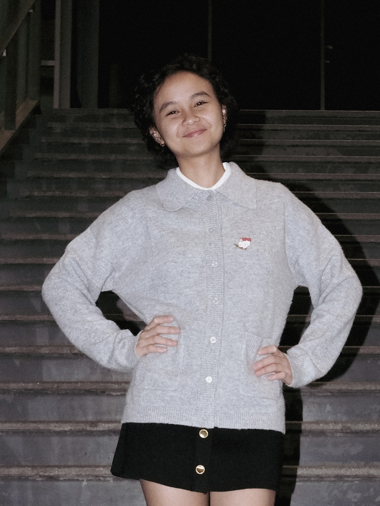
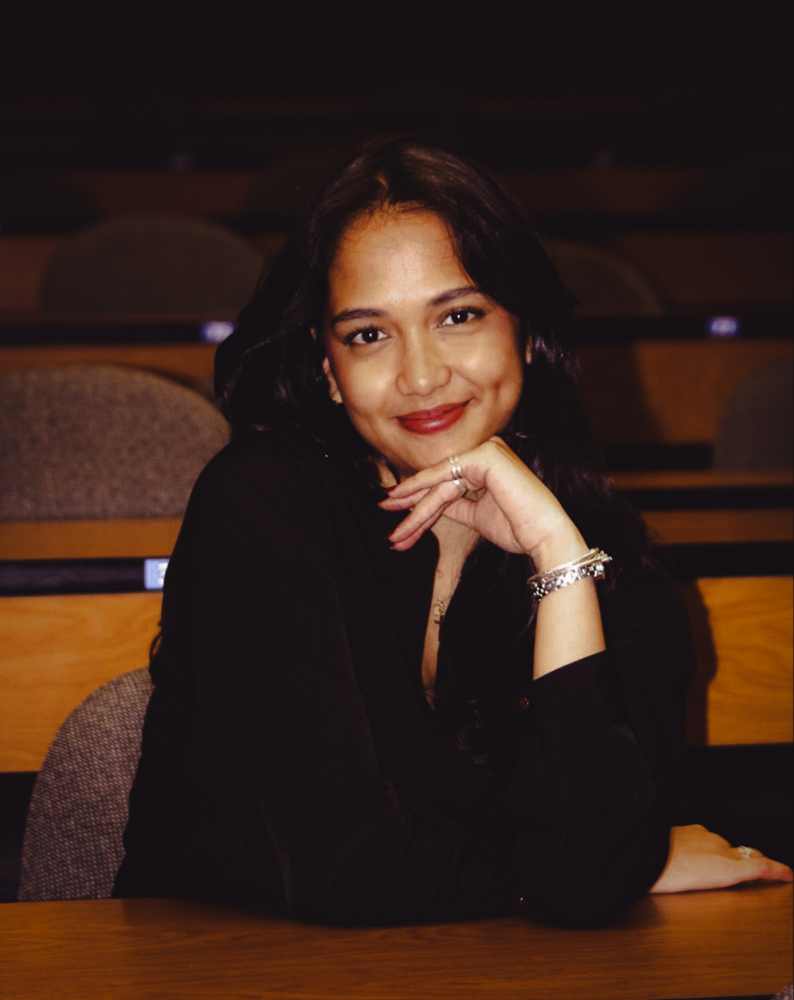
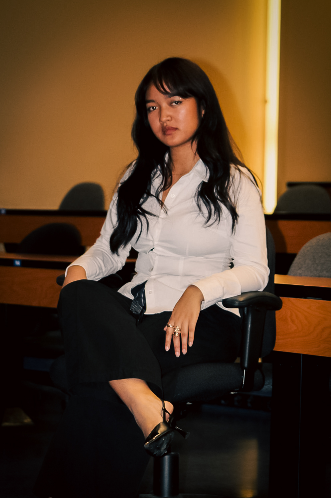
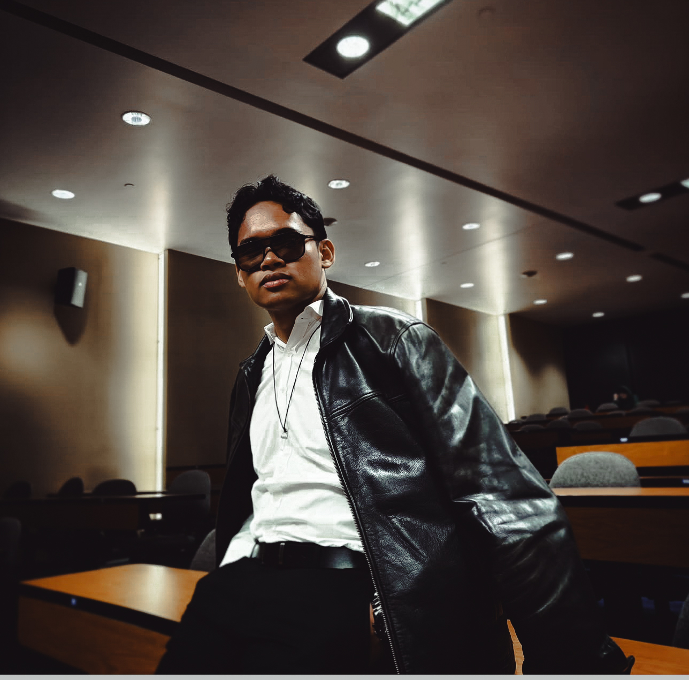
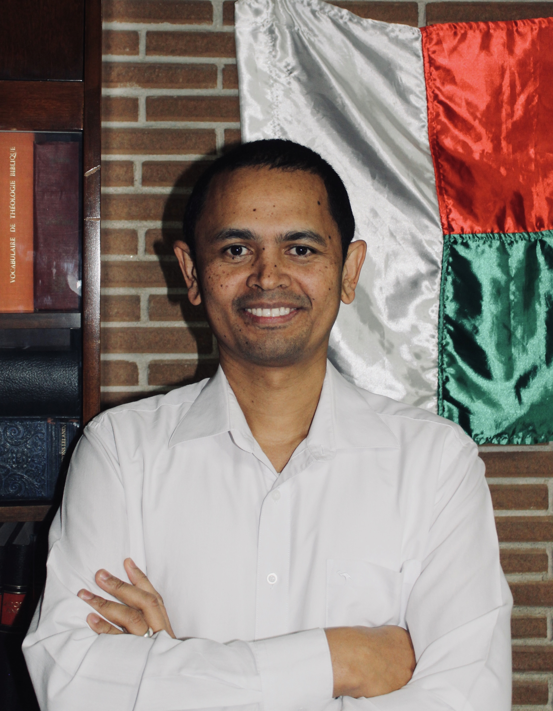
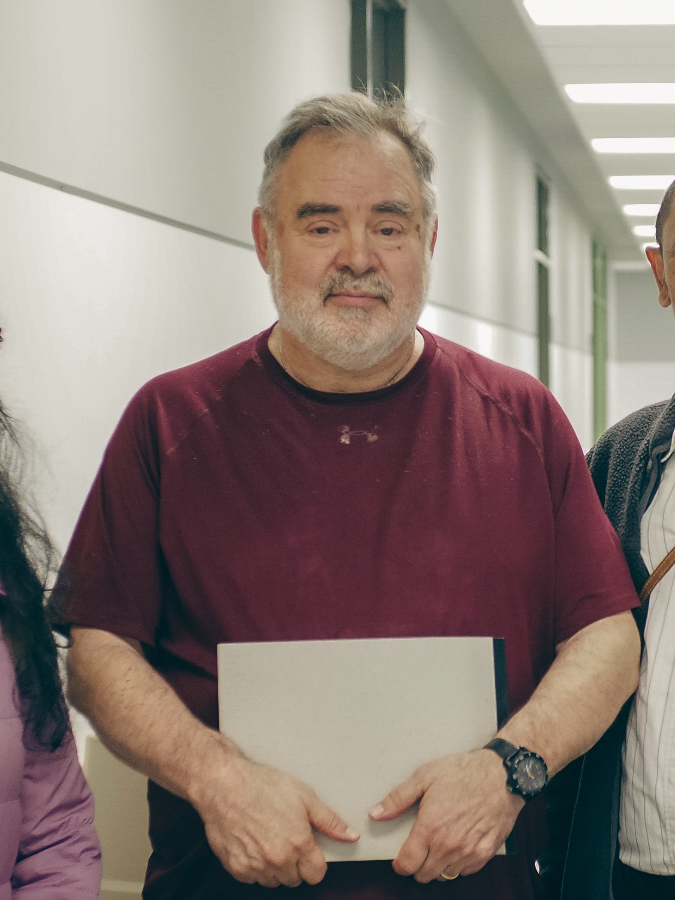

Our Executive Team
The 2025 executive team embodies a new era for AMU. United by the same ambition, they aim to push boundaries, strengthen the Malagasy community at UdeM, and proudly represent it across Canada.
Meet each member of our team below.
Heni – President
Former Vice-President, he leads the association, sets its strategic direction, and represents AMU officially with partners and the university community.

Iangola – Vice-President
The first woman to serve in the presidency. She supports the President, oversees internal affairs, and ensures smooth coordination across the team.
Chamira – Secretary General
The first Secretary General of AMU, she redefines the role. She acts as the link between the presidency and partners, and serves as the association’s spokesperson.

Emmanuella – Treasurer
The first Treasurer to hold the role independently. She monitors every cent, expense, and receipt, ensuring all projects stay aligned with the budget.

Rubis – Community Manager
The youngest executive in AMU’s history. Her energy amplifies the association’s voice. She animates our social platforms, brings life to every post, and connects the team to the community.

Miarana – Community Manager
The newest addition to the team. She shapes our communication direction, manages our channels both behind the scenes and online, and ensures AMU’s image stays strong and consistent.

Miotisoa – Event Delegate
She oversees the execution of all projects. First on the ground, she ensures the quality of the final experience and bridges preparation with what members live in person.

Romuald – Event Delegate
He coordinates between internal teams, supervises logistics, and ensures timelines are met. A key support in execution, he guarantees smoothness and coherence across all events.
Honorary Members
We also present the members who have shaped the history of AMU.

Ammy – First President and Co-Founder of AMU
He laid the foundations of a strong collective project: an inclusive space of unity, culture, and ambition that continues to inspire every executive team today.

Bernard-Simon Leclerc – AMU Patron
Academic coordinator of the professional doctorate in public health, he has supported AMU since its early days. A key institutional figure and mentor for generations of students, he upheld values of excellence and, through his generous contributions, enabled numerous projects that shaped the association.